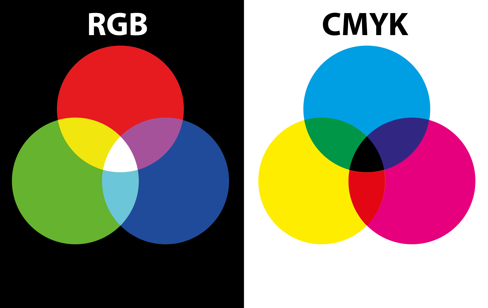

Soorten
Er zijn drie kleurmodellen: RGB (rood, groen en blauw),CMYK (Cyaan, Magenta, Yellow, Key) en als laatst Pantone
RGB
Dit kleurmodel is gebaseerd op het menselijk gezichtsvermogen en maakt gebruik van drie primaire kleuren, namelijk rood (R), groen (G), en blauw (B), om een breed scala aan kleuren te creëren.
CMYK
In tegenstelling tot het RGB-kleurmodel, dat wordt gebruikt voor digitale weergave op schermen, is het CMYK-kleurmodel specifiek ontworpen voor het drukken met kleurinkten op papier en andere fysieke media.
Pantone
Pantone is een gereguleerd kleurensysteem dat veel wordt gebruikt in de grafische industrie en andere ontwerptoepassingen. Het doel van Pantone is om een consistente en nauwkeurige manier te bieden om kleuren te specificeren en te reproduceren, ongeacht het medium of de druktechniek.
Voorbeeld
Hieronder zie je 2 van de 3 vormen
